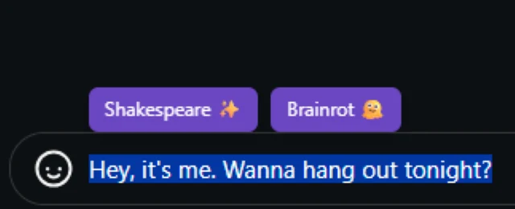

★ Flagship · AI Tools
AI Text Converter — Chrome Extension
Select any text on any webpage — inputs, textareas, contenteditable — and rewrite it in a different voice, in place. Two styles shipped so far: Shakespearean and "brainrot."
Full loop end-to-end: a JavaScript Chrome extension talking to a Python (FastAPI) backend that calls Google Gemini. A stranger can install it and use it in under a minute.